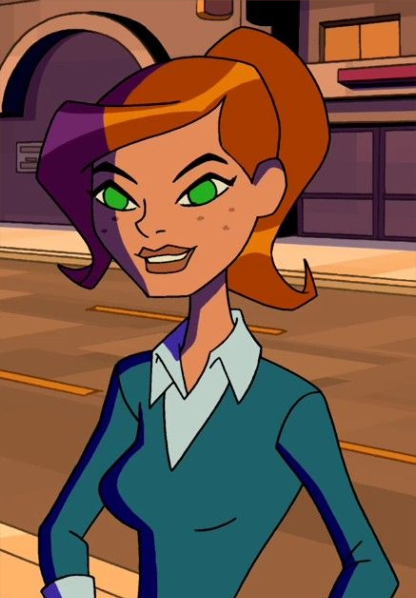

Full Name: Benjamin Kirby Tennyson
Age: 10 years old (in the original series)
Species: Human
Personality: Brave, confident, adventurous, and sometimes mischievous
Family: Gwen Tennyson (cousin), Max Tennyson (grandfather)
Goal: To protect people and stop villains using the powers of the Omnitrix
